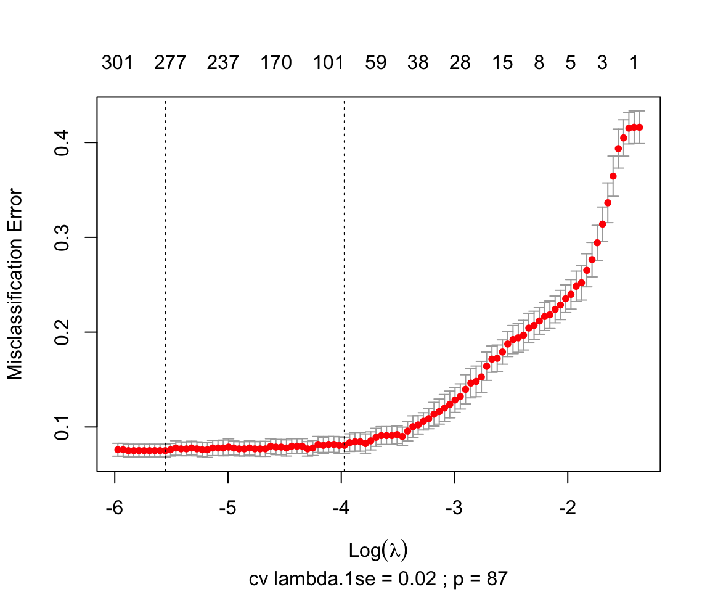

Section 4 Explore glmnet fits
We explore some glmnet fits.
- All fits must be assessed by cv and test set
set.seed(1)
sampID_train_vec <- with(AF_dgel$samples,
AF_dgel$samples$sampID[caret::createDataPartition(y=group, p=0.8, list=F)]
)
sampID_test_vec <- with(AF_dgel$samples,
setdiff(sampID, sampID_train_vec)
)
group_train_vec <- AF_dgel$samples[sampID_train_vec, 'group']
group_test_vec <- AF_dgel$samples[sampID_test_vec, 'group']
knitr::kable(table(group_train_vec),
caption="Train set") %>%
kableExtra::kable_styling(full_width = F)| group_train_vec | Freq |
|---|---|
| Control | 623 |
| HCC | 444 |
knitr::kable(table(group_test_vec),
caption="Test set") %>%
kableExtra::kable_styling(full_width = F)| group_test_vec | Freq |
|---|---|
| Control | 155 |
| HCC | 111 |
4.1 lasso
AF_lasso_cvfit <- glmnet::cv.glmnet(
x=train_lcpm_mtx,
y=group_train_vec,
family='binomial', alpha=1,
type.measure = "class")
plot(AF_lasso_cvfit)

Figure 4.1: lasso fit the train set with cv